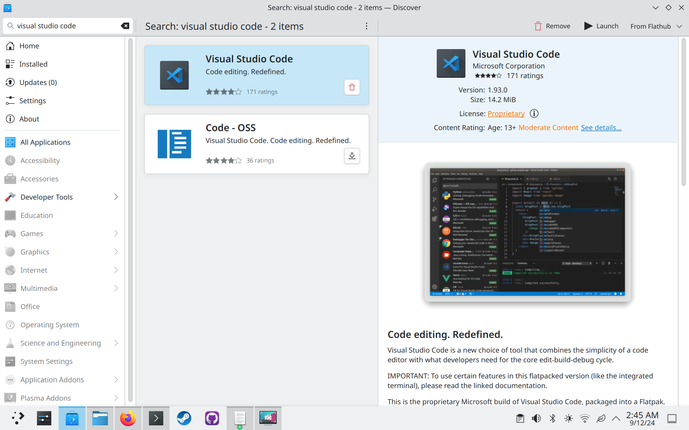
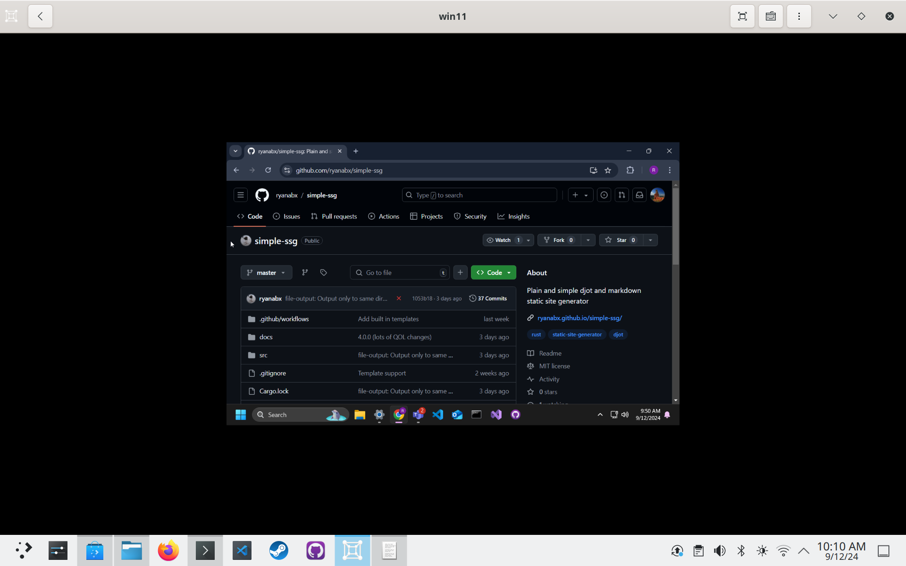

Welcome to my website!
Why am I using mdbook? It's simple.
2024-08-20 - My first blog post
After writing a static site generator, I decided that maybe it's finally time for me to make a blog, mainly about development!
This first post is just going to be a hello!
EDIT (September 12, 2024): I am now using Hugo as my static site generator. Nothing wrong with my old one, I just wanted a site that was mobile friendly.
EDIT (September 14, 2024): I'm now using mdBook instead of hugo. It's even more simple than Hugo, and it just works like I'd want it to.
My links
Who am I?
I'm in my 20s, and I'm a software developer at my day job. I really enjoy learning things outside my job though, and that includes learning new things in the software realm as well. In the summer of 2023, I started contributing to the Godot Engine, and that was my first introduction into the world of open source software. In October of 2023, I made the logical next step most open source fans take and installed Linux on my main PC.
From there, I started contributing to anything that seemed interesting to me, including most notably the COSMIC Desktop Environment (GitHub repos for COSMIC here)
Contributing to COSMIC also got me into the Rust programming language, which is now my language of choice for most of my personal projects. Speaking of personal projects...
Some of my more recent software projects
- A wayland compositor agnostic desktop shell
- Linux packaging adjacent tools
- Djot tools
- Random VSCode stuff

Using a Fedora atomic base image for a week Nevermind, using a base image for a few days and then giving up lol
I decided this unmomentous occasion is something I'd like to document, to talk about where the atomic experience could be better, and where it really shines!
For context, I daily drive Fedora Atomic Desktops, I use a custom image that includes things like Visual Studio Code, Fedora packaging tools, my dev dependencies (the principle of which being Rust and its tools), virt-manager and qemu for work, and much more!
I am challenging myself to lean into the "atomic" way of doing things, which is typically to install all your software in containers and flatpaks. I want to see how difficult it will be to run some of my typical workflows without my custom container image!
Motivation
I decided to start this challenge on a whim, after having a wonderful conversation with Neal Gompa and some others about image-based operating systems (spoiler alert, Neal is not a fan of pure image-based OSes for desktop devices). I'm (currently, always subject to change) of the viewpoint that image-based is the eventual future of operating systems, but Neal brought up many good points as to why the model doesn't pan out like expected. My understanding of his points were as follows:
NOTE: These are problems that are partially solved by
rpm-ostree, butrpm-ostreeis a partial hack that doesn't truly match the image-based paradigm.
- Image-based OSes are generally very inflexible
- Image-based OSes are good when you have an appliance that performs a specific purpose, and has specific hardware.
- Neal mentioned the Steam Deck, and I think that's an excellent example. He also mentioned IoT devices.
- Local customization is a chore, because you're fighting against a model that is designed to be "rigid and avoid hysteresis".
- "Systems that can't outlive their initial lifetime become waste eventually, and that's fundamentally a problem with image based systems"
- My interpretation of this is that the system only is as good as the upstream maintenance of the image, because otherwise you're locked to the versions of packages that are installed from the base image due to lack of mutability.
- "You are fully at the mercy of someone who may or may not care about your needs"
- This also plays into hardware enablement, as with a truly image-based system you are not able to enable your own custom hardware without the image itself supporting it.
- We see downstreams like Universal Blue adding hardware enablement into the image itself largely because they have to.
rpm-ostreeis a thing, but without that, nvidia users for example wouldn't have a choice between using the base images vs an image that ublue makes.
It's hard to disagree that image-based OSes are designed to be rigid, that's quite literally the point. We also often see images become hyper-customized for a specific use case, without reusing bits between them. This is one of those problems that might be seen as fundamental to the image-based paradigm. I think Neal is right about the limitations of the paradigm, I think the question for me is whether the tradeoffs actually matter to end-users, especially because we build solutions around the limitations of the image being rigid, such as local modifications to the base image (which is what rpm-ostree essentially does).
The common rebuttal I see in the Fedora atomic world is that you shouldn't be modifying your base system -- you should put everything in your home space. This means using flatpaks and containers in every step of your computing experience. I've traditionally found this not to be very easy to set-up, mainly in a few problem areas which I will be addressing:
Virtual Machines
Oftentimes I'll struggle to set up virtual machines because the required software to do so is best installed through a traditional package manager. Both virt-manager and virtualbox are pretty standard options to use in the Linux world. The flatpak alternative is gnome-boxes, but we will get to that later.
Container-based development
More specifically with Visual Studio Code's flatpak. This is 100% a problem that should have been solved by now, but the experience of getting a container-based workflow set up in vscode's flatpak is a nightmare to say the least. We will also get to that later.
Night 1
I started this challenge due to lack of sleep, it's currently 2 AM on a Thursday. I have work tomorrow, and I just rebased to the base kinoite image fedora:fedora/40/x86_64/kinoite.
After doing this initial write-up in KWrite, since I've lost access to my rpm installation of Visual Studio Code, I will be installing the vscode flatpak (begrudgingly). Luckily for me, all of the infrastructure for me to make a custom development container is already present in my container repo, I just need to modify my old dev container to have some new dev dependencies I rely on.
I should also note that I'm not installing the proprietary Nvidia drivers for this journey. I'm going full base image. I'm essentially pretending rpm-ostree doesn't exist, to get the full image-based experience. If the open source nouveau + NVK stack weren't stable, I'd be in for a truly crappy experience. This is part of what Neal was mentioning as an issue of truly image-based systems. All workarounds (i.e. rpm-ostree) are just that, workarounds to the image-based paradigm.
I'm going to install the vscode flatpak and go to sleep. I will have to solve the virtual machine problem tomorrow, but as a backup I won't hesitate to just use my desktop computer which has my custom image on it.

Already I have run into an issue. git-lfs is not installed on the base image. I will have to enter a podman container to initialize git-lfs on this repository, which I'd like to do in order to not track images in an inefficient manner. Alas, I will have to figure out podman containers now.
This is the container I came up with -- it just takes what's in my ostree container image and removes the OS stuff, like vscode and virt-manager:
FROM fedora:40
RUN dnf install -y \
# Git lfs
git git-lfs \
# Rust stuff
rust cargo rust-analyzer rustfmt clippy \
# Dev dependencies
wayland-devel libxkbcommon-devel fuse-devel \
squashfs-tools gstreamer1-plugins-base-devel \
gdk-pixbuf2-devel pango-devel gtk3-devel glib2-devel \
lld make automake gcc gcc-c++ clang clang-devel mold kernel-devel glibc-devel binutils binutils-devel binutils-gold \
# Git forge CLIs
gh pagure-cli \
# Fedora packaging stuff
fedpkg fedora-packager \
# Phone dev tools
android-tools pmbootstrap \
# Requirement for bootc image builder
osbuild-selinux \
# Ruby
ruby ruby-devel \
# Node.js
nodejs \
# cosmic-comp devel
libseat-devel pixman-devel \
# KDE devel
cmake
This (if it builds correctly) will be my base for my development containers.
Does using a custom dev container image defeat the purpose? I personally don't think so. Someone could just pull a base fedora container image as their dev container, and then install what they need inside it anyways. I'm just streamlining it by making my own custom image.
Instead of committing to my blog repo tonight, I'm going to go to sleep.
Day 1
I woke up late for my work day, it looks like my alarm didn't go off, or I slept through it?
After installing gnome-boxes, which to my knowledge is the only VM software available on FlatHub, it's time to try to get to work.
My first gripe I've found is that the VM is locked to 1280x800. I don't know why this is, but I will be looking it up to find out. Gnome Boxes should handle this automatically though, I shouldn't have to look it up, but alas that's how Linux works sometimes.

Also, touchpad scroll events don't seem to be propagated to the VM, which is very annoying.
Online, it was recommended that I install the spice guest tools for windows guests. Installing this driver fixed my issue with the screen being too small. I think gnome-boxes should have at least a notice about it in their app. Virtualbox has a whole button dedicated to installing guest utilities.
Not only does the VM have great resolution now, it also solved my framerate issue I've had with QEMU in the past where the FPS was locked to an arbitrary low value. Thanks Gnome Boxes!
EDIT: No it did not, turns out it just made the mouse passthrough faster. The framerate issue still exists.
Scrolling was also weirdly fixed after installing the guest utilities? It's weird that so many things required the guest utilities to function properly, but I'm just glad I can get some work done.

I need more space on my VM. Normally I would use qemu-img for this, but it's not installed on the base system. Luckily I know that gnome-boxes needs qemu to work, so I can just use qemu-img from within the flatpak. Here's how I did that:
flatpak run --command=/bin/bash org.gnome.Boxes
qemu-img resize VirtualMachines/win11.qcow2 +20G
Thanks again, Gnome Boxes!
More Interesting Comments re: Image-based discussion
I'm happy to be a part of circles where I can witness nuanced discussion about different topics. Today, Timothee Ravier, who contributes heavily to Fedora Kinoite has provided his commentary on what Neal said yesterday.
My likely botched interpretation of what he said (similar to Neal):
-
On the topic of local customization, Timothee says that
rpm-ostreehas multiple mechanisms for local customization and thatsystemd-sysextshould covert that ground as well in the future. -
On the topic of systems not being able to outlive their original lifetime, he says he doesn't know how a Kinoite system would have a different lifetime than a Fedora KDE installation.
- He says that the lifetime problem on Android and Chromebook devices doesn't come from the fact that they are immutable, but rather from the fact that they are secure, thus you have to have the keys or disable signature checks to change what's on them if the manufacturer doesn't produce updates.
-
Regarding this quote from Neal:
one of the "escape hatch" things we have with the current model is that we don't have to have a solution for everyone out of the box, people can change the system to suit their needs
Timothee says:
This is exactly why we're making bootc. Everyone will be able to customize the system to feet their needs while keeping the benefits of image based systems
I should add that
bootcis very exciting to me, as an alternative torpm-ostree's model of customization. -
In response to this from Neal:
Anything premount of theoretical writable overlays is screwed
Timothee says:
You can change the content of the initramfs with rpm-ostree and with bootc you'll be able to directly install customized images like that, and with kiwi support generate ISO/disk images
The discussion leaves me with seeing the pros and cons of image-based systems, but also leaves me more excited than ever for the bootc project. As a bonus, it's written in rust, which if you know me rust is my favorite language.
Bootc Try-out?
Speaking of bootc, I'd like to give bootc a try. I've created a minimal base image here. All it does is take the base image and install the KDE plasma desktop on top of it. How hard would it be to migrate my existing system to bootc? Let's find out.
My first attempt is going to be simply installing bootc and running bootc switch to switch to the new image. I have no idea if this will work, but let's see!
sudo rpm-ostree install bootc
systemctl reboot
sudo dnf install bootc
sudo bootc switch ghcr.io/ryanabx/kde-bootc:latest
The first try didn't work out, all I got was a single underscore in the top left corner, couldn't even enter a TTY.
I checked the bootc documentation and found this from this section:
podman run --rm --privileged -v /dev:/dev -v /var/lib/containers:/var/lib/containers -v /:/target \
--pid=host --security-opt label=type:unconfined_t \
<image> \
bootc install to-existing-root
I'm a little nervous to try this, but I'm going to try it out.
Day 1 Evening
Do not, I repeat. DO NOT try what I tried, if you have an existing rpm-ostree system, running the above command will delete your /boot directory.
I've been spending all afternoon/evening fixing my laptop, and I wasn't able to recover my /home directory. That was partly my fault as I tried again to install the system like I did, but with a fedora base system. At this point I'm now starting fresh with bootc-image-builder. It's unfortunate that the migration story isn't fully fledged out yet, but it's expected as bootc is alpha grade software.
I'll end up having a bootc deployment, but I will have to be careful about my /home directory in the future.
Luckily I have a second PC which I'm running bootc-image-builder from, but if you don't, good luck! (Or just don't mess up your original pc like I did)
Day 2
I spent most of day 2 at work, but other than that, I did create a GitHub action to automatically build my bootable container image as an ISO: See here
I got the ISO to build successfully, and then I created a systemd service that preinstalls flatpaks for me, I am still trying to get that build to work, but every CI run takes several minutes for the failure to be registered.
See my preinstall-flatpaks program here
Night 2
I decided to move all my installations to base fedora again, no atomic. Linux users and wiping their system to install new things go hand in hand.
Trying out Helix Editor
Hey everyone! Time for the (basically monthly) blog!
I've been using Visual Studio Code as my editor of choice since my senior year of undergrad. It's my favorite editor by far, and I've not really thought about changing it since; however, I recently decided to take some time to learn a different way of coding, a way that a lot of people really stand by. The modal way.
I spent some time looking around at modal editors. I considered NeoVim, but I kinda wanted something new, hip and fresh. I came across the Helix Editor. Not only is it modal, but it describes itself as a "Post-Modern Text Editor" (And it's written in Rust!).
On Tuesday, I opened up the Helix Editor and tried to figure out how it works. I've never used modal text editors, and my only experience with one is learning how to :q on Vim. I don't even know if I'd like the modal style of things, since all the editors I've used just are always Insert mode with CTRL+<KEY> hotkeys.
I noticed that Helix encourages not using the arrow keys, rather, you should use the H, J, K, and L keys to move left, down, up, and right. The arrow keys are supported, but they say if you want a more 'modal' experience, you should disable the arrow keys in insert mode and learn to move outside of insert mode. I'm not sure if I'm quite ready to give up my arrow keys, especially because the mouse is not an option.
The tutorial in Helix can be accessed by using the :tutor command when you're in the normal mode, helpfully depicted as NOR. The tutorial is pretty long, but it does a good job of telling you helpful hotkeys in order to move around.
One silly thing I like about Helix is the built-in themes. I can just type :theme <THEME> and turn one of these on. Since I'm coming from Visual Studio Code, the dark_plus theme is just like VSCode, so it feels like home.
So far, I used it yesterday and today, and here are my thoughts. I'm still learning hotkeys for everything, but here are my biggest gripes so far (nothing I can't work around eventually, just getting used to the workflow).
-
There's a bug with the C# language server, where if I want to
goto definitionof a type that's not in my project (through a nuget package, for example), it fails to process the URI. This appears to be a problem of Helix using a URL resolver crate, not a URI resolver crate: https://github.com/helix-editor/helix/issues/11334 -
When I'm in insert mode, I still want better movement abilities, and I find myself instinctively using
CTRL+Left arrowto move back a word in insert mode. I'll have to replace that muscle memory withESC+b. The only problem with that is that other text editors (non-modal) use thoseCTRL+Arrow keysquite a bit, and I don't want to lose that muscle memory either. It might not matter that much, we will see. -
When you use
pto paste something from the integrated clipboard, it pastes after the cursor, not before. This is different from most of the commands in the editor, and it doesn't make sense why this is different. This is something we can work around thankfully, we just need to useP, but I really feel like those should be switched. -
Not only that, copying and pasting from the system clipboard (
Space + yandSpace + {p|P}) is broken on my KDE system. I'm not sure why, and I don't have a bug report here to link. Might look into it later, but runninghx --healthdidn't provide any useful information, it claims the clipboard provider is present.
EDIT (10/24/24) In order to get clipboard functionality in wayland on helix, you must install wl-clipboard. Why this isn't better advertised is beyond me, but I have a working clipboard now!
- Soft wrapping is not enabled by default, making long lines annoying to deal with when writing Markdown, for example. Luckily, you can enable this in your config by adding these lines:
[editor.soft-wrap]
enable = true
For some reason, however, I don't like editing the config too much, even though they make it way easier than any other editor I've used (simply just config-open, make your edits, then config-reload). Maybe it's some of that philosophy of good defaults that I can clearly see coming from the Helix editor. My config is only the theme, and the soft wrap functionality.
- New gripe (10/24/24), no tree-based file browser. This could be solved by this PR though if it ever makes it https://github.com/helix-editor/helix/pull/11285, go show your support for it, because for years this issue has been brought up and shot down as too hard to maintain, and now there's an easily maintainable version implemented here!
Overall, I do enjoy the helix editor, and over time I will probably get good at it. For now, I'm just okay at it, and that's okay. I'm already pretty fast considering how I only learned it yesterday.
I will provide an update if I continue to use it and end up daily driving it!
Ryan's Software Wishlist
This is a list of all sorts of various issues in software that intrigues me! Will be filled with more as time goes on.
Wayland / Nvidia (NVK, etc) / XDG Portals / etc. Protocols
linux-drm-syncobj-v1 https://gitlab.freedesktop.org/wayland/wayland-protocols/-/merge_requests/90xdg-toplevel-icon-v1 https://gitlab.freedesktop.org/wayland/wayland-protocols/-/merge_requests/269ext-screencopy-v1 https://gitlab.freedesktop.org/wayland/wayland-protocols/-/merge_requests/124
chromium/electron wayland by default
chromium wayland issue tracking
winewayland.drv - Wine wayland drivers
nvk - Nouveau Vulkan Drivers
General nvk issues
General nvk MRs
gfxstrand's activity
- full vkd3d-proton support https://gitlab.freedesktop.org/mesa/mesa/-/issues/9479
full zink support https://gitlab.freedesktop.org/mesa/mesa/-/issues/9477full dxvk support https://gitlab.freedesktop.org/mesa/mesa/-/issues/9478
Flatpaks for my apps
- steam: https://github.com/ValveSoftware/steam-for-linux/issues/4473
- new issue: https://github.com/ValveSoftware/steam-for-linux/issues/4512
- vscode (issues keep being closed)
- virtualbox https://discourse.flathub.org/t/package-virtualbox/4347
Cosmic Desktop Environment Wishlist
Iced
- Adapt pop-os/iced to iced-rs/iced@0.13.1
Xwayland/Electron/Server-side decorations
https://github.com/pop-os/cosmic-comp/issues/355https://github.com/pop-os/cosmic-comp/issues/352Blurry xwayland apps (https://github.com/Smithay/smithay/pull/1223)https://github.com/pop-os/cosmic-comp/issues/329https://github.com/pop-os/cosmic-comp/issues/359
Other compositor issues/features
- https://github.com/pop-os/cosmic-comp/issues/351 https://github.com/Smithay/smithay/pull/1341
- linux-drm-syncobj-v1 https://github.com/Smithay/smithay/pull/1356
COSMIC Workspaces
- workspace overview touchpad gesture
- workspace scrolling in overview
- fix too long names causing weird skinny windows
- workspaces applet shortened mode (only show number to the left and right)
fix lag when opening workspace overview for the first timeworkspaces icon applet
Quality of life changes needed
workspace gestures
to/from workspace gestures https://github.com/pop-os/cosmic-comp/pull/342- open/close workspace overlay gestures
various Workspace fixes
other QOL changes
- Click notification to go to source https://github.com/pop-os/cosmic-applets/issues/223
Icon handling for apps without a desktop entry Solution 1: XDG Portal Solution 2: Wayland ProtocolCosmic apps are slow to open https://github.com/pop-os/cosmic-comp/issues/348Drag windows to side or top to maximize or tile right/left https://github.com/pop-os/cosmic-comp/issues/340libcosmic double-click to maximize window (requires double click in iced) https://github.com/pop-os/libcosmic/issues/323
misc bugs
- Can't connect to enterprise network https://github.com/pop-os/cosmic-applets/issues/225
Can't unmute mic from audio applet https://github.com/pop-os/cosmic-applets/issues/234No osds https://github.com/pop-os/cosmic-osd/pull/19